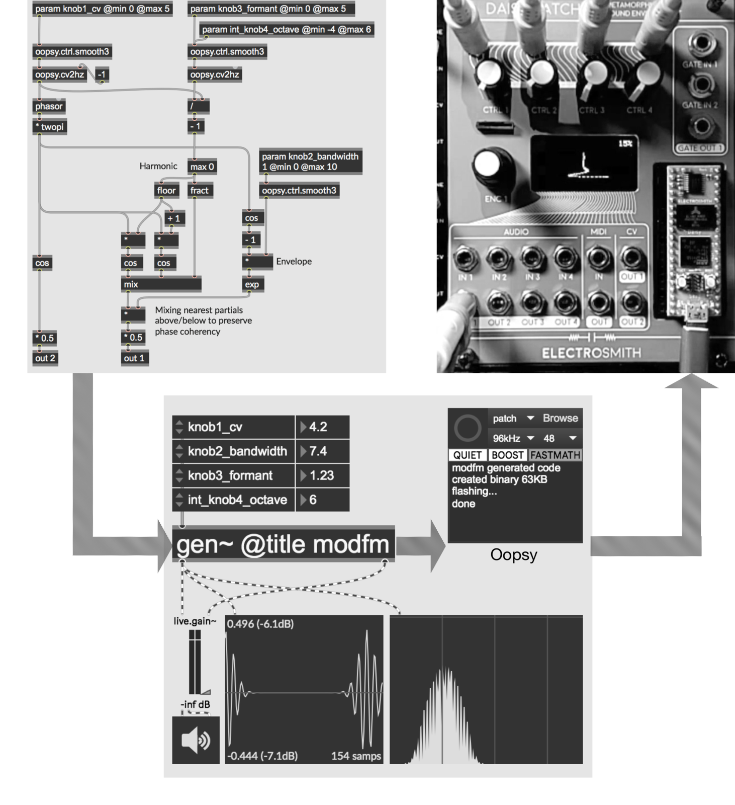
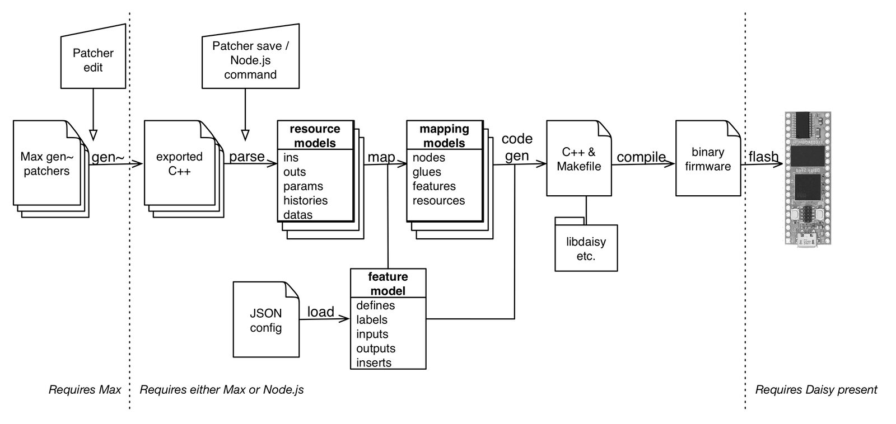

A streamlined workflow from Max/gen\~ to modular hardware
Abstract
This paper describes Oopsy, which provides a streamlined process for editing digital signal processing algorithms for precise and sample accurate sound generation, transformation and modulation, and placing them in the context of embedded hardware and modular synthesizers. This pipeline gives digital instrument designers the development flexibility of established software with the deployment benefits of working on hardware. Specifically, algorithm design takes place in the flexible context of gen~ in Max, and Oopsy automatically and fluently translates this and uploads it onto the open-ended Daisy embedded hardware. The paper locates this work in the context of related software/hardware workflows, and provides detail of its contributions in design, implementation, and use.
Author Keywords
Embedded audio, DIY Hardware, Code Generation, Modular Synthesis, Low Latency, Max/gen~, Electro-smith Daisy
CCS Concepts
•Applied computing → Sound and music computing
Introduction
The increasing power of available microcontrollers and single-board computers allows the development of new digital musical instruments (DMIs) that can combine the benefits of both general-purpose analogue sensors and controls along with audio-rate digital signal processing. Making microcontrollers such as Arduino and Teensy more accessible to musicians and luthiers has had a significant impact in the development of new music controllers, instruments, and modular synthesis modules, and the corpus of NIME research includes numerous software systems to streamline embedded development from more flexible and comfortable desktop environments. It has also contributed to a growing community of musicians moving away from desktop/laptop computer workspaces toward hardware and modular synthesis, sometimes characterized by terms “out of the box” and “DAWless” (i.e., without a digital audio workstation). Here, affordable flashable hardware offers an intermediate balance between tactility and modal flexibility.
This article describes a new addition to these domains, focused on streamlining algorithm development from the established desktop environment of Max/gen~ to the capabilities of Daisy hardware, a low cost and small format self-contained solution for embedded GPIO and digital signal processing which was the result of a successful Kickstarter campaign in 2020 [1]. The Oopsy workflow focuses on lightweight design, with minimal input required to get an algorithm onto hardware, coupled with a targeted firmware generation that optimizes for CPU usage, memory footprint, and program size.


An example of the Oopsy workflow. Top-left: a gen~ patcher, here implementing a frequency modulation algorithm, with several knobs defined by param objects. Bottom: a Max patcher hosting the gen~ for testing and development, alongside Oopsy for automatic firmware generation and upload to hardware, here configured for the Daisy Patch to run at 48kHz sampling rate, 48-sample block size, boosted CPU frequency and faster math functions. Top-right: The generated firmware running on the hardware, here displaying the waveform as a Lissajous plot.
Gen
The gen~ environment is a sub-domain of patching within Max that specifically focuses on optimized sample-by-sample signal processing [2][3]. Over a decade since its release, gen~ has grown to be a widely-used tool for many musicians, sound designers, engineers, and educators, and code exported from gen~ has been utilized in many software and hardware instruments (research projects and products) as well as pedagogical courses and broader research activities [4][5][6][7][8][9][10].
Prior to gen~, each Max signal processing (MSP) object was a pre-compiled library of code operating on samples in blocks that are dynamically exchanged between objects. With gen~ an entire patcher represents a single-sample algorithm that is converted to C++ and then to optimized machine code via JIT compilation, after every edit. This has three significant implications. First, algorithms can include feedback processes at the level of a single sample frame, an essential ingredient to many audio routines including most filter and many oscillator designs. It can be impractical or even impossible to create new designs in these areas using block-based primitives. Second, there are numerous significant optimizations that the compiler can make when the entire algorithm is available, rather than on a per-object basis, leading to better CPU performance [11]. Third, and of special relevance to this article, any gen~ object’s patcher can be configured to export the C++ code of its algorithm. The gen~ object will then re-export C++ code for every edit made to the patcher. The primary purpose of Oopsy is to map C++ code generated by gen~ to the capabilities of Daisy-based hardware in optimal and effective ways.
Daisy
The Daisy hardware is based around an embedded system (the “Daisy Seed”) featuring an ARM Cortex-M7 STM32H750 MCU processor with 64MB of SDRAM and 8MB of flash memory. It has on-board audio processing via stereo duplex audio IO as well as 31 configurable GPIO pins, including 12x 16-bit analogue-to-digital converters, 2x 12-bit digital-to-analogue converters, SD Card interfaces, PWM outputs, and a built-in micro-USB port usable for power, firmware flashing, debugging, serial protocols, and other purposes.
The Daisy Seed is compact (51 x 18mm) and affordable ($30 USD at time of writing), and well-suited to breadboarding development projects and embedding within DMIs; it is also used in several commercially available devices in standard modular synthesizer, guitar pedal stompbox, and desktop formats, some of which expose reprogramming and flashing firmware via the Oopsy software.
The MCU processor can run at 480MHz, and is quite capable of complex DSP algorithms (see the Performance section below). The AK4556 Codec in the Daisy Seed has 24-bit AC-coupled converters, while signal processing internally is 32-bit floating point. The Oopsy software supports audio processing at 48kHz or 96kHz sampling rates and audio block sizes ranging from 48 down to single sample frames, supporting throughput latencies of 1ms down to 0.01ms while still being capable of performing complex algorithms (see Table 2). Non-audio analogue pins, for knobs, switches, LEDs, control and gate voltages etc., are also sampled at the block rate, and some IO pin applications, such as gate outputs on common Daisy hardware formats, operate at the same throughput latency as audio.
ElectroSmith, the creators of the Daisy platform, also distribute four standard hardware configurations including for Eurorack modular synthesizer (Daisy Patch), stompbox (Daisy Petal), and desktop (Daisy Field). The Daisy Seed normally supports 2-in x 2-out audio ports, however the Daisy Patch hardware extends this to 4-in x 4-out via an additional AK4556 Codec connected to the second SAI port on the Daisy pinout. Several other manufacturers are also distributing Eurorack format modules built on the Daisy, including Noise Engineering (Versio), Qu-Bit Electronix (Surface and Data Bender), ModBap (Per4Mer), Venus Instruments (Veno-Echo).
Daisy firmware can be developed using Arduino, FAUST, PureData via Heavy, as well as Max/gen~ using the Oopsy software detailed in this paper. At the time of writing Oopsy has streamlined support for all four ElectroSmith hardware configurations and the Noise Engineering Versio, as well as a straightforward method to describe custom embedded configurations via JSON files.
Related Work
There are several established platforms for DMI and digital modular hardware comparable to Daisy, including both embedded computers running general-purpose operating systems (such as the Raspberry Pi) and high-performance microcontrollers (such as the Teensy). There are also several comparable software workflows for automatically translating signal processing graphs conventionally used in desktop platforms into embedded and modular hardware contexts. Many of the latter aim for generality of application, built upon language transpilers with templates for different target software and hardware contexts. Faust [12] is a pure functional language for signal circuit definitions that can generate code for multiple languages such as C, Java, WebAssembly, and from there to numerous hardware contexts through architecture templates. The Heavy hvcc compiler [13] can interpret a subset of features of Pure Data Vanilla patches into code generation for platforms including OWL, Bela, Javascript WebAudio and many others. Support for developing Daisy hardware through both Heavy and Faust are also in development, but at the time of writing less feature-complete and optimized than Oopsy. Like Heavy, Oopsy builds upon the existing base of a widely-used general signal processing environment. In contrast however Oopsy does not currently aim for generality: it is a very lightweight system tailored and optimized specifically for Daisy hardware platform (though the same approach and some of the software could be adapted to other hardware platforms).
Bela is an open-source embedded platform based on the Beaglebone single-board computer designed for ultra-low latency audio and sensor processing [14][15] with support for development with Supercollider, PureData, and C++ through a browser-based environment. It uses a 1GHz ARM Cortex-A8 processor and 512MB of RAM. An interesting feature for instrument designers is on-board speaker amps. Bela provides stereo audio input and output, 8 analogue inputs and outputs and 16 digital IOs. A much smaller variant, the Bela Mini, eliminates the 8 analogue outputs and speaker amps. A significant differentiator for Bela is the low latency, described online as an “action-to-sound” latency of 0.5ms, significantly lower than desktop, cellphone, Arduino and Raspberry Pi comparisons [16]. Bela uses Xenomai Linux for hard real-time audio processing with latencies down to 1ms and analogue IO down to 100 microseconds. The operating system overhead of the Bela is minimized in several technically innovative ways as described in [17]. The Daisy Seed has a similar size as the Bela Mini, but it is not built with the overhead of an operating system and can support latencies down to around 10 microseconds.
The OWL programmable platform [18] is an established open-source microcontroller-based system that supports multiple front-end interfaces including Max/gen~, Heavy, and FAUST. Hardware destinations include modular synthesizer modules as well as stompbox and desktop formats. A feature of the platform is the ability to load multiple algorithms or “patches” at a time, including removing and adding distinct patches without rebuilding the firmware, using a web-based interface and a USB cable via MIDI Sysex. A large library of such patches for the platform already exist [19]. Unlike the Daisy, the OWL runs an abstraction layer as a real-time operating system on the hardware, such that patches can be loaded and unloaded dynamically. Moreover, patches are not compiled for a specific hardware configuration (user code does not access hardware directly) and thus the same patches can run on different kinds of OWL-supported hardware. Indeed, there exists a port of the OWL software that can run on Daisy hardware (“Owlsy” [20]). In contrast, the approach with Oopsy is to compile each patch for the specific hardware, and upload via USB using DFU. This affords multiple opportunities for optimization in speed and memory footprint that an abstraction layer precludes, at the cost of eliminating the possibility of dynamically adding and removing patches without reflashing the hardware as a whole. With Oopsy multiple patches can be flashed at once, and switching between them is both rapid and can be MIDI-controlled, but all such patches must be flashed to the hardware at the same time. OWL audio ports are DC-coupled whereas Daisy audio ports are AC-coupled. OWL audio processes at 48kHz and CV inputs are sampled every 64 samples (750Hz). Daisy audio can process at 48 or 96kHz, and CV inputs are sampled at block rate, configurable from 48 down to 1 sample (1kHz to 96kHz).
The Mod Devices’ Mod Duo is a commercial platform for hosting software plugins in hardware boxes (with a focus on guitar pedal stompboxes) built around a 64-bit ARM CPUs with stereo audio IO at 48kHz. Plugins can be authored in Max/gen~ and converted via a cloud-based compiler for uploading to the device. Plugins on the device can be arranged into networks via a web-based visual editor skeuomorphically emulating guitar pedal chains. An Arduino shield is available to map custom sensors and controls and pair with the Mod hardware via network cable.
In the context of programmable audio platforms for modular synthesisers, an extensive list of projects can be found at [21]. For example, the Bela hardware is utilized by the Salt module and the OWL platform in the RebelTech Magus and the Befaco Lich modules. There are other hardware modules with public APIs or open-source software that allow user reprogramming, such as the Qu-Bit Nebulae, the Ornament & Crime, and many of the Mutable Instruments devices with various alternate firmware available. The popularity of such alternate firmware underlines the pragmatic value of a modal approach to modular hardware.
Method
Oopsy presents two workflow interfaces. First, it can be used in a convenient way through the Max interface itself, in which the full workflow runs automatically every time a user saves their patcher. Second, it can be invoked on a command line terminal as a Node.js script for more automated control, and to allow use cases where Max is not available or amenable. Both methods invoke the Oopsy.js Node.js script with command line arguments for the paths to one or more C++ files generated by gen~, a pre-defined or user generated JSON file describing the hardware, and configuration options such as sampling rate and block size. It then parses these files to generate C++ code specific to the patcher(s) and hardware, and if available, immediately uploads (flashes) this as new firmware to an attached hardware device. Note that Oopsy.js does not require Max: code exported by one person's patch can be shared online and used by any other person with Daisy hardware. (It may also be possible to run the Node.js workflow via an online server, including flashing devices via web-DFU, which would alleviate end-user installation requirements.)


Schematic overview of the Oopsy workflow.
The central method of Oopsy could be described informally as “snoop, fit, and glue”; that is, using a combination of parsing, feature-mapping, and code generation. For each C++ file, Oopsy.js parses the source code to identify its configuration and features, including labelled inputs, outputs, parameters, data resources and so on, to build up a feature set for the patch. Since the C++ generated by gen~ itself has a well-formed template structure, parsing can leverage tailored lightweight regular expressions rather than a heavyweight full language parser. This is then processed along with the hardware configuration JSON data to generate a model data structure that maps these features to the selected Daisy hardware’s configuration and capabilities. The Oopsy software maps features to the Daisy environment in a number of ways outlined in the next subsections, including explicit labeling and auto-mapping heuristics. The model is then interpolated into templates for code generation of a binding C++ file with appropriate calls to the libDaisy library. The ARM GCC compiler is invoked to compile this into binary firmware for the hardware device, and, if physically available, immediately flash the firmware onto it.
Mapping by name
Aside from its suite of objects for essential DSP primitives, gen~ provides a small number of objects for interfacing with an external host environment, including in, out, param, history, and data. Oopsy primarily maps to Daisy features by identifying these features in the exported code and deriving intentions from their parameters and variable names as detailed below. For example, a param knob1 in the gen~ patcher will automatically be mapped to the first knob in the hardware interface.
Audio Inputs & Outputs
The in and out objects in gen~ represent signal inputs and outputs at full sample rate resolution, uniquely identified by channel indices (with no channel count limit), and can be optionally annotated with labels. Oopsy normally maps in and out directly to whichever audio inputs and outputs are available on the hardware (with some exceptions for specific labels as detailed later). For convenience, any in objects whose channel indices are greater than the number of audio channels on the hardware will duplicate the data of earlier channels. Similarly, if the hardware has additional output channels that are not defined in the gen~ patcher, each will use data from a prior audio output channel.
Normally in gen~, sample rate and block size (vector size) are determined by the host environment. These values are available in the gen~ patcher via the samplerate and vectorsize objects and variables. They can be specified in Oopsy via the Max interface or Oopsy.js command arguments.
Analogue & Digital Inputs
A param object in gen~ exposes an input parameter of an algorithm to the host environment. Each param is uniquely and arbitrarily labeled by users, and may also be given specific initial values and value ranges (defaulting to 0-1 range and initial=0 if unspecified).
In Oopsy, analogue and digital input pin controls (switches, knobs, buttons, CV and gate inputs, etc.) are mapped by use of specific labels to param objects. These mappings and their labels are defined in the JSON configuration file of the hardware target. For the standard targets provided with Oopsy this includes labels such as “knob1”, “gate2”, “cv1”, “key3”, etc., with each having a corresponding code fragment (usually a function call defined in the libDaisy C headers) and context also defined in the JSON file. For convenience, several labels can map to the same control. So for example, in the daisy.patch.json file configuring the Daisy Patch hardware, the labels “knob1”, “cv1”, and “ctrl1” all map to the same code fragment hardware.GetKnobValue(hardware.CTRL_1); Thus a param ctrl1 in gen~ will cause this libDaisy function call to be made in the generated code, with the result routed to the parameter setter in the code exported by gen~.
These inputs are sampled at block rate, which is configurable between 1 and 48 frames of the sample rate (i.e., 1ms to 10 microseconds) and available in the patcher as samplerate / vectorsize. Since pins are polled at block rate they produce step functions; for gate inputs a drop-in abstraction (oopsy.gate.trig) is available to shorten step functions to single-sample triggers if needed. Analogue inputs also have low levels of inherent noise or instability. The Oopsy package supplies some filter examples designed as drop-in solutions here, including a 3-pole lowpass filter at 30Hz (oopsy.ctrl.smooth3) that effectively silenced noise from the most unstable hardware input ADC tested against even in highly sensitive applications such as setting long delay line lengths.
Any param with a defined @min and/or @max attribute, such as param knob3_depth 2 @min 0 @max 8, will always coerce analogue controls to map over the defined range. If either is absent, the default @min is 0 and @max is 1.0. Any param name prefixed with “int_” or “bool_”, such as param int_knob2_mode 2 @min 0 @max 4, will always coerce controls to exact integer or Boolean values. This can be convenient for analogue inputs with variable tolerances, such as coercing switches whose voltage ranges do not go all the way down to zero.
Analogue & Digital Outputs
For Oopsy, non-audio hardware outputs can be addressed by attaching an appropriate label to an out object or to a history object (a history object defines a stateful variable in gen~ which can be given an unique label, and can also be used for single-sample feedback Z-1 operations). For example, the daisy.pod.json configuration file for the Daisy Pod hardware includes two output labels “led1” and “led2” for the onboard LEDs. Thus, an out 3 led1 or history led2_out object in the patcher will route its signal to update an LED intensity.
For some hardware it is more convenient to map more numerous features using data objects in gen~. Each data object in gen~ defines a labelled block of random-access floating-point data with frame length and a number of channels, and host environments may provide access to read and write the contents of this memory by reference to its label. For example, the Daisy Field target platform features an array of 24 LEDs, which can be referred to in gen~ using a data leds 24 object and corresponding poke leds objects to dynamically address specific LEDs as needed.
Digital outputs are updated at block rate, while analogue outputs are updated at close to to block rate. Since output gates shorter than the block size could be missed, the Oopsy package supplies a drop-in abstraction (oopsy.gate.min) to automatically extend any gate to the block length or more, ensuring even the shortest trigger is not missed by hardware.
Auto-mapping
A hardware configuration can mark certain analogue inputs for automapping by setting ”automap”: true in the JSON file. Any control marked for automapping that was not explicitly mapped to a param by name in the gen~ patcher will be automapped to any available unmapped param. In this way, even a patcher that was not explicitly configured for a Daisy hardware will be usable from it. In the case of the standard Daisy configurations supplied with Oopsy this is true for all manual controls (knobs, switches, and buttons). As such, any patcher with at least one gen~ object is ready to upload to the hardware for play simply be dropping in the Oopsy abstraction and hitting save.
MIDI
The hardware supports MIDI IO via UART pins. Several strategies for mapping MIDI streams to the gen~ environment have been explored in Oopsy. This is not trivial as gen~ is a sample-processing domain and has almost no intermittent “message-passing” capabilities beyond param inputs.
Common inputs. For most commonly used message types Oopsy will generate dedicated mappings in response to specific variable names. For example, param midi_cc1 will output a signal representing the last-received value form MIDI Continuous Controller 1 (mod wheel) on any channel, while param midi_cc7_ch2 will output the last-received value form MIDI Continuous Controller 7 on channel 2, etc. These continuous controller values will be expressed in the range of [0..1] rather than [0..127]. Similarly, param midi_press will report channel pressure in [0..1], param midi_bend or param midi_bend_ch2 will output the last received MIDI pitch bend value in the range of [-1..1], param midi_clock will report MIDI time code ticks, etc. param midi_drum36 will output the last-received velocity of note 36 on channel 10, also expressed in the range of [0..1] rather than [0..127]; and more generally param midi_vel64_ch3 etc. will output the last-received note velocity for a specific pitch and channel.
Raw bytes. For comprehensive coverage, Oopsy provides raw access to incoming and outgoing MIDI byte streams as signals. An in N midi object (where N is any unused input index) will stream raw MIDI bytes into the patcher as a sample-rate signal, one byte per sample, with two modifications. First, if no incoming data is available the signal will have a negative value. Second, bytes are scaled by 1/256 for convenience, to avoid damage by accidental connection to audio outputs. An example patcher (oopsy.midi.parse) demonstrates decoding raw MIDI bytes into all standard channel events as well as clock/transport, SYSEX dumps, etc. Users can take or modify whichever features are needed for a given project.
MIDI output. Similar naming conventions can be used to output MIDI messages from a patcher, such as history midi_cc13_out, history midi_bend_out, history midi_drum36_out etc. Such MIDI outputs use the same normalized value ranges as the inputs, and default to MIDI channel 1 if not specified (with the exception of drum outputs on channel 10). General MIDI note output requires two or more signal values (pitch, velocity, polyphonic pressure etc.). Oopsy provides a polyphonic note output using combinations of midi_note1_pitch_out, midi_note1_vel_out, midi_note1_press_out and so on for note2, note3 etc. as desired. Oopsy-generated code will only send event-like messages (notes, program changes, etc.) when values change, while continuous messages (CC, bend, etc.) are throttled to fit into the limited MIDI baud rate specification.
OLED Display
Two of the current standard Daisy configurations incorporate a 128x64 pixel monochromatic OLED display. If present, Oopsy will generate code to fill the OLED with several switchable pages. Scope: Displays stereo signals (overlay, side-by-side, top-bottom, Lissajous plots), for any pair of inputs and/or outputs, with variable zoom. Parameters: A scrollable list displaying names, current values, and hardware mappings of all param objects in the patcher. param labels can include a human-friendly name, such as param knob5_pitch, in which case the display will use the label “pitch”. This page also offers a way to modify unmapped parameters via an encoder, with steps quantized to divisions chosen to nearest power of 2 sizes for a resolution of between 100-200 steps. Patchers: A scrollable list of available patcher names for switching between (see multi-patcher description below). Console: Displays memory usage and other debugging information. Several OLED pages also display current CPU usage percentage and MIDI input/output activity. The OLED interface code has negligible impact on CPU performance itself but does increase program code size; it can be disabled entirely by passing a flag to the Oopsy.js script.
Dynamic multi-patcher configuration
The prevalence of multi-mode devices in hardware synthesis noted above inspired the support of multi-patcher firmware in Oopsy, allowing a hardware to serve a number of possible roles without needing to reflash it. If a Max patcher contains more than one gen~ object, all of their gen~ patchers will have their C++ code exported and passed to Oopsy.js, which will produce a “multi-app” firmware for the hardware. With this firmware, the hardware can then switch dynamically between different patcher algorithms. Patcher switching takes only a few of milliseconds and can be selected via MIDI upon receiving standard Program Change events. Hardware configurations can also switch patchers by user interface interactions, such as using the patcher-select OLED page on the DaisyPatch and DaisyField or using the encoder LED ring on the DaisyPetal. Multi-app firmware has very little overhead, as noted below.
Performance
CPU performance. The performance of a diverse selection of typical patchers was measured under various option settings (see Table 1). Audio performance was measured as the duration spent in the audio processing callback divided by available time (block size divided by sample rate), with measurements taken from the CPU microsecond timer. (This ratio is shown on-screen on Daisy platforms with OLED displays, and also through the pulse-width of a 1Hz LED on the Daisy Seed itself.) CPU performance is deterministically related to sampling rate and MCU clock frequency. Decreasing sampling rate from 96kHz to 48kHz predictably results in halving the CPU time. Disabling MCU boost drops the CPU clock frequency from 480MHz to 400MHz and results in the expected 20% increase in CPU time for audio processing.
Some transcendental floating-point math operations can be very CPU-intensive on the embedded processor. The code generation in gen~ offers alternative optimized 32-bit approximations of many such operations that are significantly more efficient and smaller in code footprint than the standard math library. Users can access these implementations in two ways. The simplest option is to toggle a “fastmath” option in the Max interface (or add “fastmath” as a Node.js command argument), which will replace all such standard math library functions. For more controlled use, users can instead use drop in operators including fastexp, fastpow, fastcos etc. as replacements for their standard namesakes. For example, the Gigaverb example patcher used eight exp operators to map a linear knob controls to a logarithmic frequency ranges for filters in the feedback delay networks; replacing these with fastexp equivalents had no audible impact but reduced the total CPU usage from 48% to 20%.
Latency. The block size is configurable in Oopsy at different periods down to a single sample, which reduces audio and control throughput latency but increases CPU cost. Testing increasing the block size as far as 256 samples showed very minimal improvement in CPU performance. Reducing block size below 16 samples starts to show more sharply rising CPU differences (see Table 2). It is notable for example that the complex Dattoro reverb algorithm can function within CPU limits at 96kHz and a block size of 1 sample, resulting in a throughput latency of 0.01ms.
Runtime memory. The Daisy hardware provides two stores of random-access memory: 512KB of SRAM and 64MB of SDRAM. Testing revealed that algorithms using SRAM for runtime memory resulted in better CPU performance than those using SDRAM, sometimes with significant differences. Fortunately, code generated by gen~ separates out large object allocations (that is, for delay and data objects which can easily run to kilobytes or sometimes megabytes in size) to a later stage than the core algorithm state (likely tens or hundreds of bytes in total). Accordingly, Oopsy uses a strategic allocator with a simple heuristic: first, all core algorithm memory is allocated in SRAM; and second, all large object memory blocks are allocated from SRAM while space permits, and falling back to SDRAM otherwise. All allocations occur during the start up of a patcher algorithm, and no allocations occur after audio processing begins. In practice, the authors have found only very few patchers require slower SDRAM space at all (see Table 1). For example, the Gigaverb reverb algorithm as provided in the standard gen~ examples included with Max utilizes 1MB of SDRAM in addition to 480KB of SRAM, while the Freeverb and Dattoro reverb algorithms, also both included with Max, fit entirely into SRAM.
Program Memory. The Daisy hardware has 128kB of flash memory capacity for firmware program code, including libDaisy and dependencies as well as gen~- and Oopsy-generated code. Fortunately, gen~-generated code is quite compact with no additional dependencies. (Compactness of code produced by gen~ arose incidentally from efforts to reduce JIT compilation times of gen~ within the Max environment itself.) Oopsy is also conducive to minimizing code size as generated code is tailored very specifically to the hardware configuration used, conferring an advantage over more dynamic or abstracted interfaces to hardware. Oopsy re-uses common code through compile-time C++ patterns rather than run-time abstractions wherever possible, and omits code and dependencies for any hardware features unused by the patcher either via suppressing code generation or via preprocessor macros. Program footprint therefore largely depends on the features available and utilized in the hardware. A baseline of 50KB is typical for the libDaisy and Oopsy common code (with an additional 8-10KB overhead if OLED features are used), plus a size per patcher included in the firmware binary. The code size of example patchers included with Oopsy, which reflect a typical range of complexity of real-world modules, range from <1KB (mid-side encoder/decoder) to 21KB (stereo 4-second delay with feedback tilt filters), with an average contribution per patcher of around 8.5KB (see Table 1). Interestingly, in some cases the “fast math” variants also led to significant reductions in code size.
Multi-app performance. There is virtually no additional runtime memory or CPU overhead for multi-app firmware. App code is defined in a union since only one app is running at a time, so the total runtime memory footprint is only the size of the largest app. SRAM and SDRAM stores use pre-allocated blocks whose allocation pointers are reset to zero whenever apps are switched. The most significant constraint on multi-apps is the number of patchers that can fit in the limited flash memory; using the sizes measured above, the platform can support around eight typical patchers on average.
Table 1. CPU and memory usage of a variety of example patchers. CPU measured as percentage of available time spent in audio-processing, with CPU boost to 480MHz enabled. For some patchers, variants using fastmath approximations were compared with standard math library variants. All tests used the default block size of 48 sample frames. Runtime memory footprint measured for both SRAM and SDRAM stores. Program code footprint recorded as final binary size minus the 50KB baseline for an empty patcher.
Patcher | 48kHz | 96kHz | SRAM | SDRAM MB | Code |
|---|---|---|---|---|---|
Empty patcher | 0 | 0 | 0.05 | 0 | |
Mid-side decoder & encoder | 0 | 0 | 0.52 | <1 | |
Scatter matrix mixer | 3 | 7 | 0.22 | 2 | |
Universal slope generator | 4 | 9 | 0.44 | 10 | |
ModFM oscillator (fastmath/standard) | 5/ | 11/ | 0.3 | 3/ | |
Squinewave oscillator (fastmath/standard) | 7/ | 15/ | 0.3 | 5/ | |
Feedback FM & PM oscillator (fastmath/standard) | 8/ | 17/ | 0.53 | 5/ | |
Phase-preserving crossover SVF filter (fastmath/standard) | 9/ | 18/ | 0.32 | 3/ | |
Shift register sequencer | 10 | 20 | 0.63 | 14 | |
Dattoro reverb | 10 | 21 | 230 | 13 | |
Stereo 4 second filter feedback delay (fastmath/standard) | 17/ | 33/ | 0.44 | 2 | 12/ |
32-point sinc anti-aliased wavetable (fastmath/standard) | 45/ | 85/ | 128 | 15/ | |
Gigaverb (fastmath/standard) | 20/ | 41/ | 480 | 1 | 11/ |
Pulsar generator (fastmath/standard) | 32/ | 62/ | 0.4 | 10/ |
Table 2. Block size impact on IO latency (milliseconds) and CPU usage (percentage used of available time), testing various patchers:
Block size (samples) | 256 | 48 | 16 | 4 | 2 | 1 |
|---|---|---|---|---|---|---|
IO latency @48kHz (ms) | 5.33 | 1.00 | 0.33 | 0.08 | 0.04 | 0.02 |
IO latency @96kHz (ms) | 2.67 | 0.50 | 0.17 | 0.04 | 0.02 | 0.01 |
Patcher tested: | CPU performance (%) | |||||
Gigaverb @48kHz | 48 | 49 | 50 | 53 | 59 | 71 |
32-point sinc anti-aliased wavetable osc @48kHz | 46 | 47 | 48 | 52 | 59 | 69 |
Stereo 4 second delay @48kHz | 32 | 35 | 36 | 37 | 43 | 52 |
Dattoro reverb @96kHz | 20 | 21 | 23 | 28 | 38 | 57 |
Community
Oopsy has been available as an open-source project hosted on Github [22] since November 2020. Available online statistics suggest that the Oopsy project is addressing real interests with a growing community of users, including close to 300 downloads and git clones of the software in the first two months, 3000 views and 100 posts on the forum and 300 members of a Slack group dedicated to the Oopsy software in the same period, and 3,500 views and 110 subscriptions from an online tutorial video over three months:
At the time of writing, a commercial Eurorack product from an independent company is being developed exclusively with Oopsy. An independent open source / open hardware platform for guitar pedal stompboxes based around the Daisy Seed (Terrarium) also has Oopsy workflow support close to completion. The authors have also been advised that the Oopsy workflow is likely to support undergraduate teaching in at least one university music technology course (with no known relation to the authors).
Conclusion
Oopsy supports a streamlined workflow from a well-established platform for digital signal processing into a promising emerging hardware platform highly suitable for DMIs and NIMEs. The workflow applies a pragmatic and lightweight solution for mapping from existing resources to available features, through the use of simple labeling schema, automapping, and drop-in examples for common requirements. Oopsy supports a diversity of IO features including a variety of MIDI handling strategies and has full-featured support for available fixed-format hardware configurations as well as a flexible data-driven JSON schema for open-ended DIY hardware configurations. The firmware generated benefits from optimizations possible with a highly targeted workflow, and incorporates practices to minimize program and runtime memory footprints as well as features for reducing CPU overhead. The performance measurements indicate that Oopsy can be used to author and flash hardware with a broad diversity of commonly sought algorithms including oscillators, filters, matrix mixers, slope generators, sequencers, delays and reverbs at high fidelity and low latency. Of note, tests demonstrated that the system is capable of an expensive digital oscillator design (a wavetable oscillator using dual 16-point sinc interpolation for smooth waveform-agnostic anti-aliasing over 13 octaves) at 48kHz sampling rate and throughput latency down to ~0.01ms, which thus permits placing such algorithms within analogue feedback audio modulation circuits covering the entire audible spectrum, and thus escaping one of the common problems of working with digital signal processing in hardware modular synthesizers. The project is fully open source and incorporates a diversity of example materials, supporting industry, community, and pedagogical projects.
Compliance with Ethical Standards
The research described in this article was undertaken without financial or other conflicts of interest with the exception that the creators of the Daisy platform supplied sample hardware for development and testing.
Citations
https://www.kickstarter.com/projects/electro-smith/daisy-an-embedded-platform-for-music
↩- ↩
- ↩
- ↩Zheng, S. (2016). GrainPlane: Intuitive Tactile Interface for Granular Synthesis. In Proceedings of the Audio Mostly 2016 (pp. 34–38).
- ↩Loizillon, G. (2013). ZOOPHONIE: NOTES SUR UNE INSTALLATION SONORE ET SES DEVELOPPEMENTS. In Journées d’Informatique Musicale.
- ↩Roberts, C., & Wakefield, G. (2017). Gibberwocky: new live-coding instruments for musical performance. In NIME (pp. 121–126).
- ↩Simon, S. L. (2020). Improvised Music for Computer and Augmented Guitar: Performance with Gen∼ Plug-ins. In International Conference on Human-Computer Interaction (pp. 339–349).
- ↩Werner, K. J., Abel, J. S., & Smith III, J. O. (2014). A Physically-Informed, Circuit-Bendable, Digital Model of the Roland TR-808 Bass Drum Circuit. In DAFx (pp. 159–166).
- ↩hyun Ahn, J., & Dudas, R. (2013). MUSICAL APPLICATIONS OF NESTED COMB FILTERS FOR INHARMONIC RESONATOR EFFECTS. Ann Arbor, MI: Michigan Publishing, University of Michigan Library.
- ↩Leonard, J., & Villeneuve, J. (2019). mi-gen∼: An Efficient and Accessible Mass-Interaction Sound Synthesis Toolbox. In SMC 2019-16th Sound &Music Computing Conference.
- ↩Wakefield, G. (2012). Real-time meta-programming for interactive computational arts. PhD Thesis: University of California at Santa Barbara.
- ↩Orlarey, Y., Fober, D., & Letz, S. (2009). FAUST: an efficient functional approach to DSP programming.
- ↩
- ↩Moro, G., Bin, A., Jack, R. H., Heinrichs, C., McPherson, A. P., & others. (2016). Making high-performance embedded instruments with Bela and Pure Data.
- ↩
- ↩
- ↩McPherson, A., & Zappi, V. (2015). An environment for submillisecond-latency audio and sensor processing on BeagleBone Black. In Audio Engineering Society Convention 138.
- ↩Webster, T., LeNost, G., & Klang, M. (2014). The OWL programmable stage effects pedal: Revising the concept of the on-stage computer for live music performance. In NIME (pp. 621–624).
- ↩
- ↩
https://blog.macieksypniewski.com/2019/07/08/programmable-audio-platforms
↩- ↩